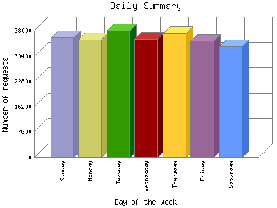
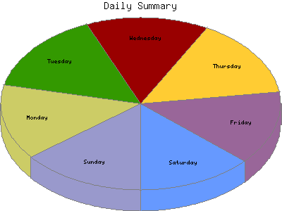

Analog 5.24
Analog 5.24 Report Magic for Analog 2.13
Report Magic for Analog 2.13The Daily Summary identifies the level of activity as a total for each day of the week. This summary also compares the level of activity on weekdays and weekends as a total for the report time frame.


| Day of the week | Number of requests | Percentage of the requests | |
|---|---|---|---|
| 1. | Sunday | 35,831 | 14.34% |
| 2. | Monday | 35,281 | 14.12% |
| 3. | Tuesday | 37,972 | 15.20% |
| 4. | Wednesday | 35,605 | 14.26% |
| 5. | Thursday | 37,123 | 14.87% |
| 6. | Friday | 34,805 | 13.93% |
| 7. | Saturday | 33,124 | 13.27% |
| Total Weekdays | 180,786 | 72.40% | |
| Total Weekend | 68,955 | 27.61% | |
This report was generated on November 17, 2025 01:09.
Report time frame April 8, 2024 11:04 to November 16, 2025 04:46.
| Web statistics report produced by: | |
| Analog 5.24 | Report Magic for Analog 2.13 |